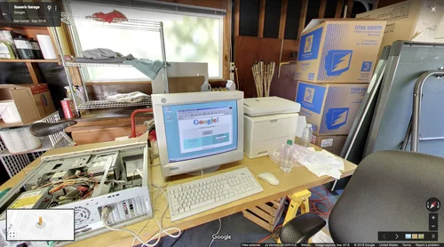

Historia de Internet - Línea del Tiempo
Desde ARPA hasta la era de la nube

Eventos Relacionados
| 1995 - Internet Comercial | 2004 - Facebook | 2007 - Internet Móvil | 2010 - Era de la Nube |
1998 – Nace GoogleEl 4 de septiembre de 1998, dos estudiantes de doctorado de Stanford, Larry Page y Sergey Brin, fundaron oficialmente Google Inc. en un garaje en Menlo Park, California. Sin embargo, la historia de Google comenzó dos años antes, en 1996, cuando Page y Brin empezaron a trabajar en un proyecto de investigación llamado "BackRub" en Stanford. Su objetivo era mejorar la forma en que funcionaban los motores de búsqueda en Internet. En ese momento, los motores de búsqueda existentes como AltaVista, Yahoo y Excite clasificaban las páginas web principalmente contando cuántas veces aparecían las palabras de búsqueda en cada página. Este método era fácil de manipular: los webmasters podían simplemente llenar sus páginas con palabras clave repetidas para aparecer primero en los resultados. Los resultados de búsqueda a menudo eran irrelevantes o de baja calidad, haciendo difícil encontrar información útil en la creciente Web. Inicialmente, Google se financió con una inversión de $100,000 del cofundador de Sun Microsystems, Andy Bechtolsheim, quien escribió el cheque después de una breve demostración. En sus primeros años, Google se enfocó exclusivamente en perfeccionar su búsqueda, sin un modelo de negocio claro. En 2000, lanzaron AdWords, un sistema de publicidad basado en palabras clave que eventualmente se convertiría en una de las máquinas de hacer dinero más efectivas de la historia. Hoy, Google (ahora parte de Alphabet Inc.) procesa más de 8.5 mil millones de búsquedas diarias y ha transformado cómo accedemos a información, revolucionando Internet y la economía digital global.  🔗 Fuente: about.google/our-story |